In this page code chunks are “folded” so as to decrease the clutter when searching for examples. Above each plot you will find a small triangle followed by “Code”. Clicking on the triangle “unfolds” the code chunk making visible the R code used to produce the plot. Except for the loading of packages shown in section Preliminaries code examples are in most cases self contained. When they are not, this is indicated by a comment.
The code in the chunks can be copied by clicking on the top right corner, where an icon appears when the mouse cursor hovers over the code listing.
For simplicity, whenever possible I use base R functions instead of contributed R packages. For those packages used only in specific examples I use colon notation to indicate the ‘package’.
Important
One needs to always check that insets do not occlude anything significant, such as observations in the base plot. This makes insets unsuitable for automation, unless the scale limits of the base plot are expanded to ensure that no overlap is possible. Alternatively if the data layers are plotted on top the inset layer any overlap can be easily detected.
Data labels, plot annotations and insets
Data labels add textual information directly related to individual data points (shown as glyphs). Text position in this case is dependent on the scales used to represent data points. Text is usually displaced so that it does not occlude the glyph representing the data point and when the link to the data point is unclear, this link is signaled with a line segment or arrow. Data labels are distinct from annotations in that they contribute directly to the representation of data on a plot or map.
Annotations differ from data labels, in that their position is decoupled from their meaning. Insets can be thought as larger, but still self-contained annotations. In most cases the reading of inset tables and plots depends only weakly on the plot or map in which they are included.
In the case of annotations and insets the designer of a data visualization has the freedom to locate them anywhere, as long as they do not occlude features used to describe data. I will use the term annotation irrespective if the “labels” are textual or graphical. Insets are similar to annotations, but the term inset is used when an annotation’s graphical or textual element is complex and occupies more space within the plotting area. Insets can be moved from within the main plotting area to being adjacent to it, e.g., as a smaller panel, without any loss of meaning.
Uses of insets
The use of insets in plots was more frequent when plots where drawn using ink and pen by draftsmen. With the advent of computer-drawn plots they became less common. In many situations they are very useful but not well supported by plotting software.
Note
Insets are very frequently used in detailed maps. A future separate gallery is planned for map insets. They can be added similarly as those shown here, but projections and coordinate systems add complexity.
Insets are not normally used for data exploration, they are in most cases used in publications and reports, either to provide context or save space. If well designed they can enhance communication of information.
Preliminaries
The code used is shown on-demand above each plot and can be copied. We first load the packages we will use.
When package ‘ggpp’ is loaded and attached, package ‘ggplot2’ is also attached. The only function from ‘ggplot2’ that is redefined by ‘ggpp’ is annotate(), which remains backwards compatible with ‘ggplot2’.
library(ggpp)
Loading required package: ggplot2
Attaching package: 'ggpp'
The following object is masked from 'package:ggplot2':
annotate
library(dplyr)
Attaching package: 'dplyr'
The following objects are masked from 'package:stats':
filter, lag
The following objects are masked from 'package:base':
intersect, setdiff, setequal, union
Inset plots within plots
Inset plots are most frequently annotations. They can be used to zoom in to a portion of the data, to show a less important property of observations, or more commonly for maps, to show a broader region to provide recognizable context.
Using annotate()
The first set of examples show how to use annotate() together with the geoms from package ‘ggpp’ to add inset plots to single-panel ggplots. The examples show different uses of insets. All examples use data sets available in R or the packages loaded. In this examples we use annotate() together with geom_plot_npc() or geom_plot().
Zoom in
geom_plot_npc() obeys normalized plot coordinates (NPC) instead of data coordinates. NPC coordinates are relative to the plotting area and take values in [0..1]. They make consistent positioning of annotations easy. Only for this first example we show the use of both geom_plot_npc() and geom_plot(). In both geoms the default for hjust and vjust is "inward".
Code
# zoom in regionzoom.region <-list(x =c(4.9, 6.2), y =c(13, 21))# main plotp.base <-ggplot(mpg, aes(displ, hwy, colour =factor(cyl))) +geom_point(alpha =0.3, size =3) # transparency to make overlaps visible# inset zoomed-in plotp.inset <- p.base +coord_cartesian(xlim = zoom.region$x, ylim = zoom.region$y) +labs(x =NULL, y =NULL) +theme_bw(8) +scale_colour_discrete(guide ="none")# whole plot using annotate() and NPC coordinatesp.combined <- p.base +annotate(geom ="plot_npc", npcx =0.95, npcy =0.95, label = p.inset)# highlight zoomed-in regionp.combined +annotate(geom ="rect", xmin = zoom.region$x[1], xmax = zoom.region$x[2], ymin = zoom.region$y[1], ymax = zoom.region$y[2],linetype ="dotted", fill =NA, colour ="black")
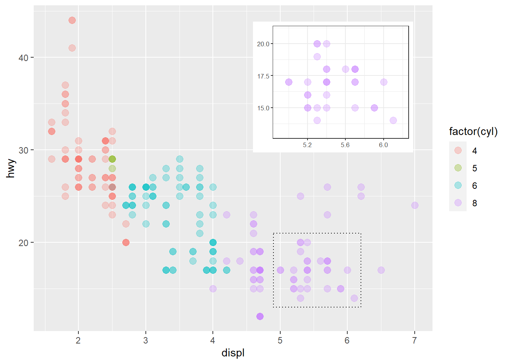
geom_plot() obeys the usual x and y aesthetics expressed in data coordinates. As shown here, while NPC coordinates are refered to the plotting area set by other plot layers, using data cordinates, just as for text labels, results in its expansion (scale limits are modified) as needed to include the inset’s x and x coordinates.
Code
# CONTINUED FROM CODE CHUNK IMMEDIATELY ABOVE# whole plot using annotate() and data coordinatesp.d.combined <- p.base +annotate(geom ="plot", x =7, y =50, label = p.inset)# highlight zoomed-in regionp.d.combined +annotate(geom ="rect", xmin = zoom.region$x[1], xmax = zoom.region$x[2], ymin = zoom.region$y[1], ymax = zoom.region$y[2],linetype ="dotted", fill =NA, colour ="black")
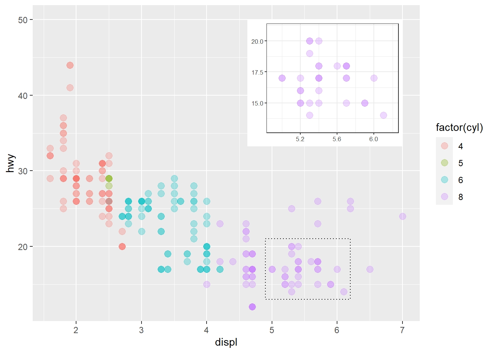
Zoom out
Code
# zoom in regionzoom.region <-list(x =c(4.9, 6.2), y =c(13, 21))# a plot with zoom area highlightedp <-ggplot(mpg, aes(displ, hwy, colour =factor(cyl))) +annotate(geom ="rect", xmin = zoom.region$x[1], xmax = zoom.region$x[2], ymin = zoom.region$y[1], ymax = zoom.region$y[2],linetype ="dotted", fill =NA, colour ="black")# inset whole-plot p.inset <- p +geom_point(alpha =0.3) +labs(x =NULL, y =NULL) +theme_bw(8) +scale_colour_discrete(guide ="none")# main zoomed-in plotp.base <- p +coord_cartesian(xlim = zoom.region$x, ylim = zoom.region$y) +expand_limits(y =24) # whole plot using annotate()p.base +geom_point(alpha =0.5, size =3) +annotate(geom ="plot_npc", npcx =0.98, npcy =0.98, label = p.inset) +scale_y_continuous(expand =expansion(mult =c(0.05, 0.20)))
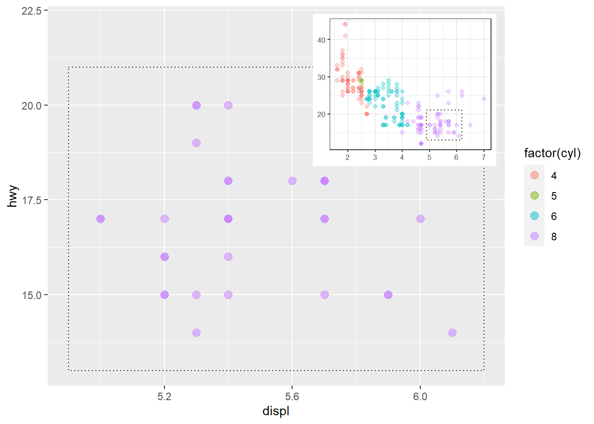
Summary plot
Code
# column plot of summaries as insetp.inset <-ggplot(mpg, aes(factor(cyl), hwy, fill =factor(cyl))) +stat_summary(geom ="col", fun = mean, width =2/3) +labs(x ="Number of cylinders", y =NULL, title ="Means") +scale_fill_discrete(guide ="none")# scatter plot as main plotp.base <-ggplot(mpg, aes(displ, hwy, colour =factor(cyl))) +geom_point(alpha =0.3, size =3) +labs(x ="Engine displacement (l)", y ="Fuel use efficiency (MPG)",colour ="Engine cylinders\n(number)") +theme_bw()# plot with inset plot using annotate()p.base +annotate("plot_npc", npcx =0.97, npcy =0.98, label = p.inset +theme_bw(8))
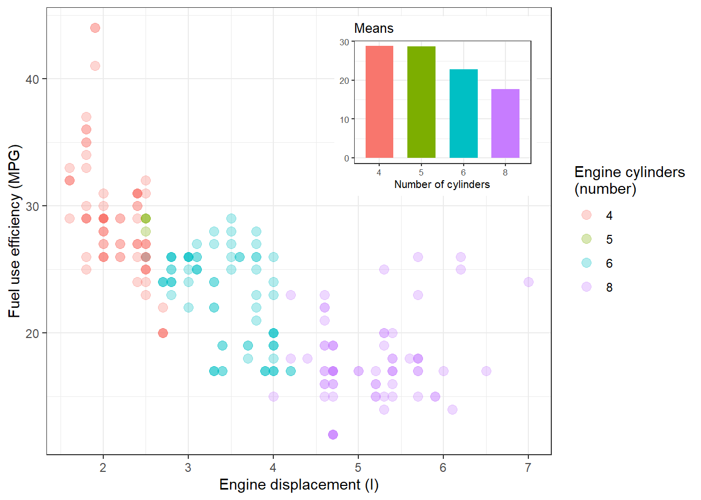
Other data or variables
Code
# box plot as insetp.inset <-ggplot(mpg, aes(factor(cyl), hwy, fill =factor(cyl))) +stat_boxplot() +labs(x ="Engine cylinders (number)", y ="") +scale_fill_discrete(guide ="none")# scatter plot as main plotp.base <-ggplot(mpg, aes(displ, hwy, colour =factor(cyl))) +geom_point(alpha =0.3, size =3) +labs(x ="Engine displacement (l)", y ="Fuel use efficiency (MPG)",colour ="Engine\ncylinders\n(number)") +theme_bw()# plot with inset plot using annotate()p.base +annotate("plot_npc", npcx =0.97, npcy =0.98, label = p.inset +theme_bw(9), vp.width =0.6, vp.height =0.4) # relative size of inset
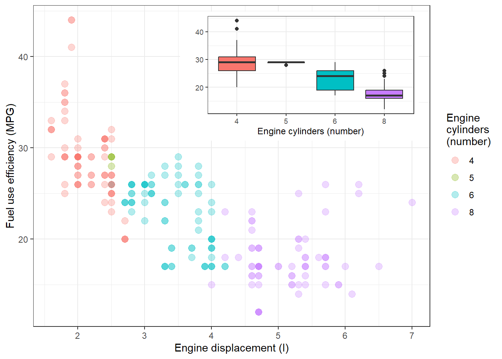
Using geom_plot() and geom_plot_npc()
In the examples above we used annotate() as it is the easiest approach. However, annotate() does not support adding different annotations to different panels in a faceted plot. Very small plots can sometimes function as data labels, specially in maps. In both cases we need to use the geometries directly and pass a data frame as argument to their data formal parameter.
When building data object containing the inset plots we need to add a list as a column in a data.frame. This is possible as long as the lengths match, but the list object needs to be protected with I(), R’s identity function.
Code
# faceted scatter plot as base plotp.base <-ggplot(mpg, aes(displ, hwy, colour =factor(cyl))) +geom_point(alpha =0.3, size =2) +labs(x ="Engine displacement (l)", y ="Fuel use efficiency (MPG)",colour ="Engine\ncylinders\n(number)") +facet_wrap(facets =vars(cyl), labeller = label_both) +theme_bw()# ad hoc function for constructing box plotsmake_inset <-function(target.cyl) {ggplot(subset(mpg, cyl == target.cyl),aes(factor(cyl), hwy)) +stat_boxplot() +labs(x ="Engine cylinders\n(number)", y ="") +scale_fill_discrete(guide ="none") +theme_bw(7) }# list of box plots as insetsp.inset.list <-lapply(unique(mpg$cyl), make_inset)# data frame to be used as data for plotting insetsinset.df <-data.frame(cyl =unique(mpg$cyl),plots =I(p.inset.list),npcx =c(0.97, 0.97, 0.0, 0.97),npcy =0.5)# plot with inset plots using geom_plot_npc()p.base +geom_plot_npc(data = inset.df, vp.height =0.8,mapping =aes(npcx = npcx, npcy = npcy, label = plots))
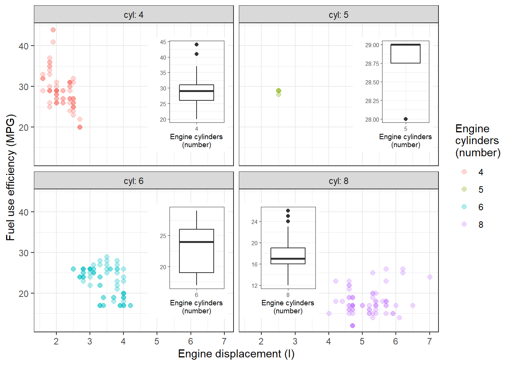
When using tibbles instead of data frames, the call to I() can be omitted.
Code
# CONTINUED FROM CODE CHUNK IMMEDIATELY ABOVE# tibble to be used as data for plotting insetsinset.tb <- tibble::tibble(cyl =unique(mpg$cyl),plots = p.inset.list,npcx =c(0.97, 0.97, 0.0, 0.97),npcy =0.5)# plot with inset plots using geom_plot_npc()p.base +geom_plot_npc(data = inset.tb, vp.height =0.8,mapping =aes(npcx = npcx, npcy = npcy, label = plots))
Alternatives
Tip
Inset plots used as annotations, but not as data labels, can be added to base plots using the plot composition operators and function inset_element() from package ‘patchwork’.
If the desired composed plot format is a ‘grid’ grob then the individual plots can be converted first into grobs with function ggplotGrob() and these grobs subsequently combined using functions from package ‘grid’.
Inset tables within plots
Tables are less frequently used as insets than plots. As annotations, they can be useful in two situations: 1) reporting results for the statistical analysis of the plotted data, and 2) adding numerical summaries about the data. Very small tables can be also useful as data labels to highlight specific observations in a plot or data for locations in a map.
Using annotate()
The first set of examples show how to use annotate() together with the geoms from package ‘ggpp’ to add inset tables to single-panel ggplots. The examples show different uses of insets. All examples use data sets available in R or package ‘ggplot2’. In this examples we use annotate() together with geom_table_npc() or geom_table().
Summaries
A simple table of medians computed using base R’s aggregate() added using annotate() and geom = "table_npc".
Code
# compute medians grouped by number of cylindersdf <-aggregate(cbind(hwy, cty) ~ cyl, data = mpg, FUN = median)# create a plot with an inset table with mediansggplot(mpg, aes(displ, hwy, colour =factor(cyl))) +annotate(geom ="table_npc", npcx =0.95, npcy =0.95, label = df) +geom_point(alpha =0.3, size =3) +theme_bw()
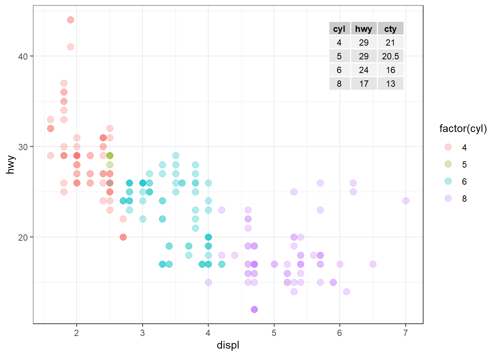
Here we use package ‘dplyr’ to compute the summaries, and we name the variables directly with the desired column titles as strings to be parsed into R expressions. We add the table as above but pass parse = TRUE so that the column titles display as math expressions.
Code
# compute means and variances grouped by number of cylinders as a data framempg |>group_by(cyl) |>summarize("bar(italic(x))"=round(mean(hwy), 1),"italic(s)^{2}"=round(var(hwy), 1),"italic(n)"=n()) -> tb# create a plot with an inset table with mediansggplot(mpg, aes(displ, hwy, colour =factor(cyl))) +annotate("table_npc", npcx =0.95, npcy =0.95, label = tb, parse =TRUE) +geom_point(alpha =0.3, size =3) +theme_bw()
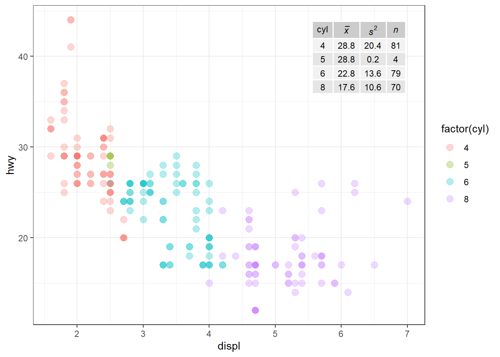
In this third example we use stat_fmt_tb() together with geom_table() to substitute some of the column headers, select columns, size or text and colours, and change the order of rows.
Code
# compute medians grouped by number of cylinderstb <- mpg |>group_by(cyl) |>summarise(hwy =median(hwy), cty =median(cty))# create a data frame with a single rowdata.tb <-data.frame(x =7, y =44, tb =I(list(tb)))# create plot using `stat_fmt_tb()` to modify the data frameggplot(mpg, aes(displ, hwy, colour =factor(cyl))) +stat_fmt_tb(data = data.tb, aes(x, y, label = tb),table.theme = ttheme_gtlight,size =4.5, colour ="darkblue",tb.vars =c(Cylinders ="cyl", MPG ="hwy"), # renametb.rows =4:1) +# change orderlabs(x ="Engine displacement (l)", y ="Fuel use efficiency (MPG)",colour ="Engine\ncylinders\n(number)") +geom_point(alpha =0.3, size =3) +theme_bw(15)
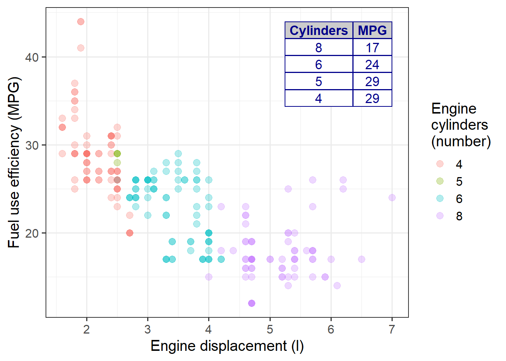
Code
# compute means and variances grouped by number of cylinders as a tibblempg |>group_by(cyl) |>summarize("bar(italic(x))[hwy]"=round(mean(hwy), 1),"{italic(s)^{2}}[hwy]"=round(var(hwy), 2),"bar(italic(x))[displ]"=round(mean(displ), 2),"{italic(s)^{2}}[displ]"=round(var(displ), 3),"italic(n)"=n()) -> tb# split the tibble into a list of one-row data framessplit.ls <-split(as.data.frame(tb), f = tb$cyl)# assemble a data frame to use as datasplit.df <-data.frame(cyl =names(split.ls), dfs =I(split.ls), npcx ="left",npcy ="bottom")# create a plot with an inset table with mediansggplot(mpg, aes(displ, hwy)) +geom_table_npc(data = split.df, aes(npcx = npcx, npcy = npcy, label = dfs),size =2.5, # size of text in tablesparse =TRUE) +geom_point(alpha =0.3, size =2) +facet_wrap(facets =vars(cyl), scales ="free") +scale_y_continuous(expand =expansion(mult =c(0.05, 0.15)),limits =c(0, NA)) +theme_bw()
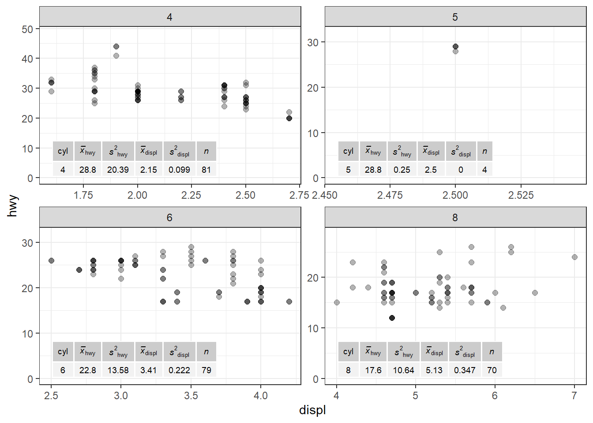
Alternatives
Tip
Inset tables used as annotations, but not as data labels, can be added to base plots using the plot composition operators and function inset_element() from package ‘patchwork’ if the table is available as a ‘grid’ grob.
If the desired composed plot format is a ‘grid’ grob then the plot can be converted first into a grob with function ggplotGrob() and this grob subsequently combined with a table grob defining a table using functions from package ‘grid’.
Inset ‘grid’ graphical objects within plots
Functions geom_grob() and geom_grob_npc() mimic the user interface of geom_text_s() which is a superset of that of geom_text() from package ‘ggplot2’. This makes them best suited for adding graphical data labels and annotations. As they accept ‘grid’ grobs, they can add both bit maps and vector graphics within the same plot layer in a single call. As both bitmaps and vector graphics can be converted into ‘grid’ grobs, both are supported, can even coexist in the same plot layer. Package ‘grid’ is included in the R distribution and the underlying plotting engine used by ‘ggplot2’.
Warning
Be aware that the PDF format supports both vector graphics and bitmaps. Conversion from vector graphics into bitmaps is usually relatively easy, while the reverse is much more difficult.
Using annotate()
Bitmaps in various file formats are very common, and include photographs. Using annotate() together with geom_grob_npc() we can easily add for example a logo available as a bitmap file to a plot. In this example we read one bitmap from a PNG file using package ‘magick’. This is one out several ways available in R to import raster data.
Code
# find the path to a PNG bitmap file included in 'ggpp'logo.file.path <-system.file("extdata", "logo-ggpp.png", package ="ggpp", mustWork =TRUE)# read the fileggpp.bm.logo <- magick::image_read(logo.file.path)# create the plot converting the raster into a grobggplot(mpg, aes(displ, hwy, colour =factor(cyl))) +annotate(geom ="grob_npc", npcx =0.95, npcy =0.9,label = grid::rasterGrob(ggpp.bm.logo)) +geom_point(alpha =0.3, size =3)
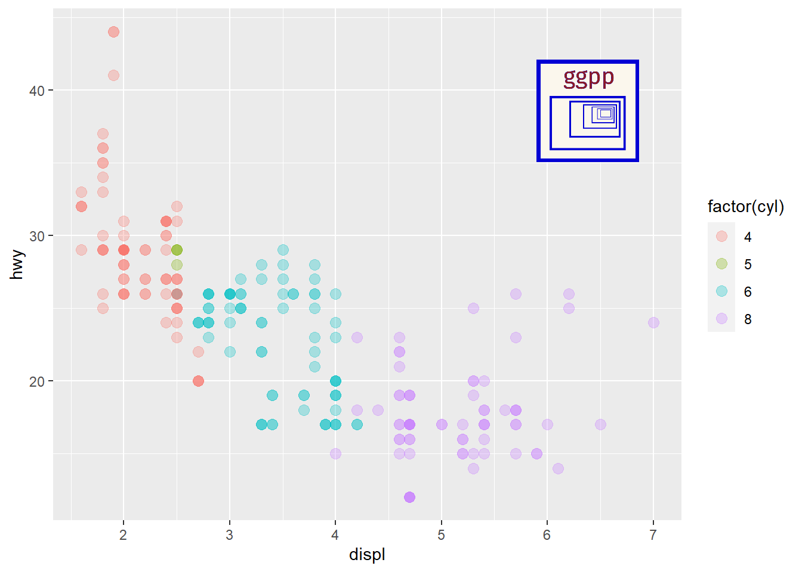
Vector graphics can be defined directly using functions from package ‘grid’ or converted into grobs from SVG or PDF code. Base R plots and ggplots can be also rendered into grobs.
For the next example we follow the technical report SVG In, SVG Out by Paul Murrell to create a grob by reading an SVG file of the same logo as in the previous example.
Code
library(gridSVG)
Attaching package: 'gridSVG'
The following object is masked from 'package:grDevices':
dev.off
Code
# find the path to a SVG vector graphics file included in 'ggpp'logo.svg.name <-system.file("extdata", "logo-ggpp.svg", package ="ggpp", mustWork =TRUE)# convert the SVG into a Cairo driver specific SVG implementationrsvg::rsvg_svg(logo.svg.name, "logo-cairo.svg")# read the file created above by the Cairo driver into a picture object ggpp.vg.logo <- grImport2::readPicture("logo-cairo.svg")# create the plot converting the picture into a grobggplot(mpg, aes(displ, hwy, colour =factor(cyl))) +annotate(geom ="grob_npc", npcx =0.95, npcy =0.9,label = grImport2::pictureGrob(ggpp.vg.logo, ext="gridSVG"),vp.height =0.22) +geom_point(alpha =0.3, size =3)
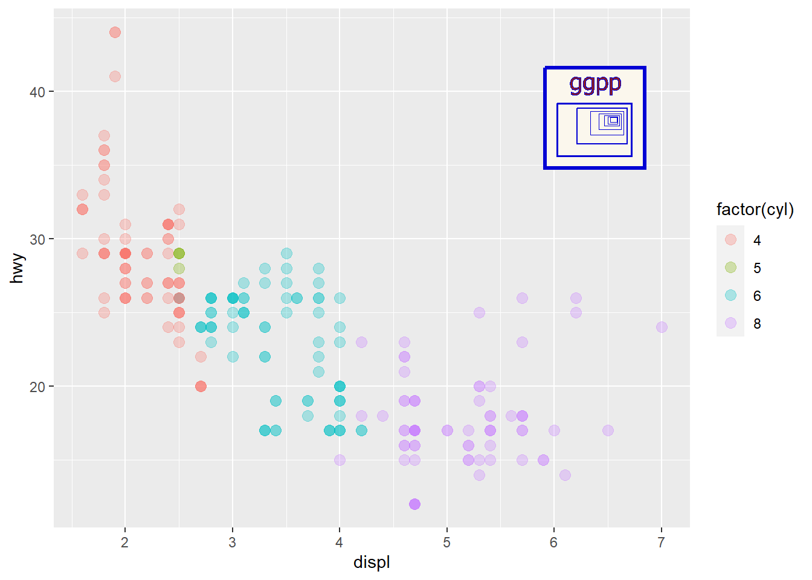
Tip
Using vector graphics for insets is most advantageous when the final format into which the plot is rendered is also in a vector graphic format like SVG, PS or PDF.
Using geom_grob() and geom_grob_npc()
As shown above, we can use bitmaps or rasters as well as vector graphics as annotations. In the next example they function as data labels for a column plot with the bitmaps describing the molecular structure. We need to first convert them into graphical objects (grob) compatible with package ‘grid’. In this example we read two bitmaps from PNG files using package ‘magick’. This is one out several ways available in R to import raster data.
Code
# read a bitmap file, in this case included in 'ggpp'Isoquercitin.file.path <-system.file("extdata", "Isoquercitin.png", package ="ggpp", mustWork =TRUE)Isoquercitin <- magick::image_read(Isoquercitin.file.path)Robinin.file.path <-system.file("extdata", "Robinin.png", package ="ggpp", mustWork =TRUE)Robinin <- magick::image_read(Robinin.file.path)# some fake concentration data together with grobsflavonoids.df <-data.frame(metabolite =c("Isoquercitin", "Robinin"),structure =I(list(grid::rasterGrob(image = Isoquercitin), grid::rasterGrob(image = Robinin))),concentration =c(10, 8))# make plot with data labelggplot(flavonoids.df, aes(metabolite, concentration, label = structure)) +geom_col(width =0.2, fill ="grey95", colour ="black") +geom_grob(inherit.aes =TRUE,nudge_y =2,segment.linewidth =0,vp.height =0.2, vp.width =1) +expand_limits(y =13.5) +labs(x ="Flavonoid", y =expression("Concentration "*(mg~g^{-1}))) +theme_bw()
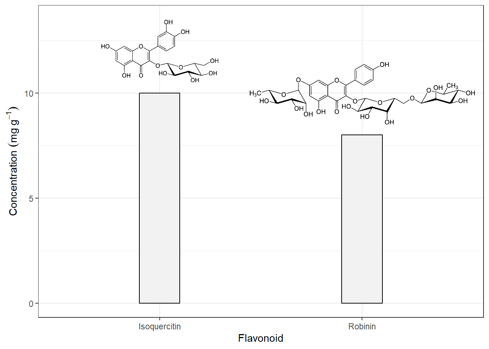
Tip
Function image_read() supports several other bitmap formats in addition to PNG. Version 6.9.12.3 of ‘magick’, used to render this page supports the following formats and devices.
Although ‘magick’ is convenient to use, it is not the only way of importing or creating raster objects in R. Ploting itself, however, remains unchanged.
Of course, we can also use functions from package ‘grid’ to create grobs from scratch, both simple and as lists or trees of grobs defining complex shapes. He we combine some simple grobs with the PNG and SVG versions of the logo of package ‘ggpp’ read in the examples above.
Code
# the raster and picture versions of the logo are reused from above# we create a data frame with six different grobs, the coordinates and# viewport width and height.grobs.tb <-data.frame(x =c(0, 10, 20, 40, 0, 50), y =c(4, 5, 7, 9, 12, 12),width =c(0.05, 0.05, 0.01, 1, 0.2, 0.23),height =c(0.05, 0.05, 0.01, 0.3, 0.3, 0.325),grob =I(list(grid::circleGrob(gp = grid::gpar(col="darkred", fill="pink", lwd =2)), grid::rectGrob(gp = grid::gpar(lwd =3)), grid::textGrob("I am a Grob", gp = grid::gpar(fontsize =16)), grid::textGrob("abc", gp = grid::gpar(fontface ="italic",color ="red",fontfamily ="serif")), grid::rasterGrob(ggpp.bm.logo), grImport2::pictureGrob(ggpp.vg.logo, ext="gridSVG") ) ) )# we create a single-layer ggplot with all the grobsggplot() +geom_grob(data = grobs.tb, aes(x, y, label = grob, vp.width = width, vp.height = height),hjust ="inward", vjust ="inward") +scale_y_continuous(expand =expansion(mult =0.3, add =0)) +scale_x_continuous(expand =expansion(mult =0.2, add =0)) +theme_bw(12)
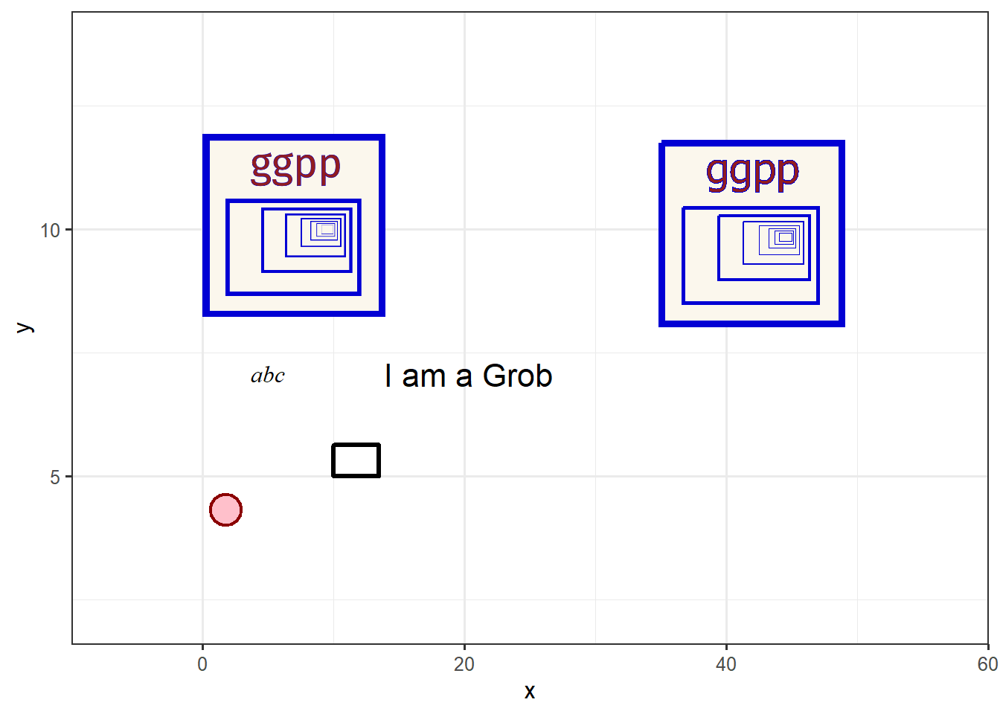
The font used to create the bitmap of the logo in Adobe Illustrator was not available in R, and substituted for the vector graphics version. The lines in the logo are also rendered slightly different as well as the colour of the text.
Alternatives
Tip
Package ‘ggplot2’ defines geom_raster() which makes it possible to directly add a raster as a plot layer.
Package ‘ggimg’ defines geom_rect_img() that mimics geom_rect() but fills the rectangles with raster images, and geom_point_img() that mimics geom_point() but uses raster images instead of the usual shapes as graphical elements. Especially the second of these geoms can be used to create pictorial representations of data.
Inset grid grobs used as annotations, but not as data labels, can be added to base plots using the plot composition operators and function inset_element() from package ‘patchwork’.
If the desired composed plot format is a ‘grid’ grob then the ggplot can be converted first into a grob with function ggplotGrob() and this grob subsequently combined with a separately created ‘grid’ grob using functions from package ‘grid’.